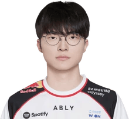

Lee Sang-Hyeok (이상혁)
Player Profile
Biography
Lee "Faker" Sang-hyeok is a professional League of Legends player. During the entirety of his professional career he has only played for one organisation, T1 (previously SKTelecom T1). Among a plethora of records, Faker is the first person to play over 1,000 games in the LCK with a 2:1 W/L ratio to accompany it. After 13 years with the organisation, Faker has countered speculation of his retirement stating "I will continue with T1 and have no plans to retire" and that "it's not about the money, I just want to be the best." Faker has proved through iconic outplays and a massive portfolio of accolades that he is the greatest League of Legends player of all time.